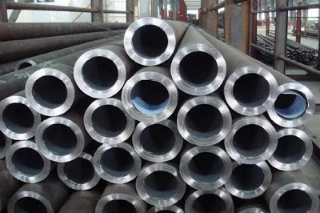
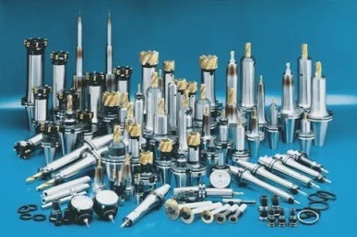
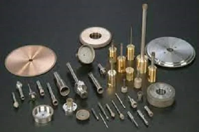

Номер: 132
Назва спеціальності:
Матеріалознавство



Під час навчання за спеціальністю 132 «Матеріалознавство» майбутні
фахівці набувають комплекс умінь та знань, який дозволяє:
реалізовувати технології створення й застосування нових матеріалів
та покриттів; досліджувати вплив умов отримання та різноманітних
факторів (температури, тиску, опромінювання, зовнішнього
середовища тощо) на їх структуру, фізичні, хімічні, технологічні,
експлуатаційні та інші властивості та характеристики;
застосовувати методи управління властивостями матеріалів на основі
уявлень з теоретичної механіки, фізики та хімії твердого тіла,
структурного аналізу, фазових перетворень, теплового впливу,
легування, поверхневих та капілярних явищ при створенні матеріалів
та покриттів із необхідним комплексом експлуатаційних
характеристик, що характеризуються комплексністю та невизначеністю
умов із застосуванням методів фізики, хімії та механічної
інженерії. Випускники спеціальності 132 «Матеріалознавство»
отримують навички розв’язання складних спеціалізованих задач та
практичних проблем під час професійної діяльності у галузі
механічної інженерії та можуть працювати на на підприємствах
будь-якої організаційно-правої форми (комерційні, некомерційні,
державні, муніципальні) усіх форм власності для реалізації
адміністративної та управлінської діяльності, пов'язаної із
розробкою, застосуванням, виробництвом, обробкою та випробуванням
металевих, неметалевих композиційних та функціональних матеріалів
та виробів на їх основі, обіймаючи посади: бригадира на дільницях
основного виробництва, головного технолога, головного інженера,
директора з матеріально-технічного постачання, технічного
директора, завідувача лабораторії, завідувача майстерні,
контролера режимів роботи технологічного устаткування, техніка
(майстра) з експлуатації та ремонту машин і механізмів, майстра з
ремонту технологічного устаткування та транспорту, начальника
виробничого або ремонтного цеху, техніка-технолога із
матеріалознавства та зварювання, техніка з підготовки технічної
документації та інших. Підготовка фахівців передбачає поглиблене
вивчення мов, постійну апробацію своїх знань та навичок на
конференціях, а також під час стажування та проходження виробничих
практик як на провідних підприємствах регіону так й підприємствах
Євросоюзу (за бажанням здобувача). Стабільно високий попит на
фахівців з матеріалознавства на ринку праці надає фахівцям широкі
можливості для працевлаштування та побудови кар’єри й гарантує
високий рівень оплати праці!